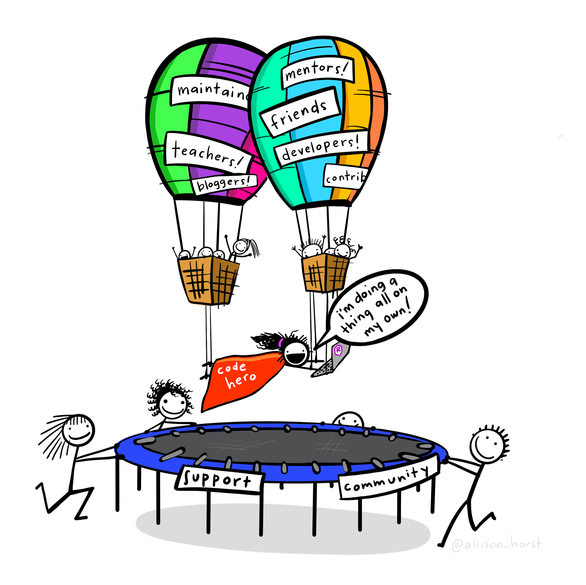

[1] 4Introdução ao R e Suas Funcionalidades
Fernanda Kelly R. Silva | Estatística
Quem é a Fê?
Eu sou uma mulher preta com coragem e que fez (e ainda faz) uma boa limonada com os limões que a carreira na área da tecnologia oferece a todas minorias sociais.

Arte por Allison Horst
E faz o quê?
Vida (?) Acadêmica
- Graduada em Estatística pela Universidade Federal de Goiás (UFG);
- Especialista em Data Science e Analytics pela Universidade de São Paulo (USP);
- Especialista em Gerenciamento de Projetos pela Fundação Getúlio Vargas (FGV);
- Mestranda em Sistemas Inteligentes e Suas Aplicações na área da Saúde pela Universidade Federal em Ciências da Saúde de Porto Alegre (UFCSPA);
E vocês?

Vamos começar…
Instalando o R (ou não?)
Important
Aqui é importante dizer que o nome da linguagem é R e o nome da IDE (integrated development environment) é RStudio, ou seja, a IDE RStudio é um ambiente de desenvolvimento que utilizamos para editar e executar os códigos em R. E claro, não existe somente a IDE RStudio que oferece a possibilidade de trabalhar com a linguagem R, há várias outras que também executam códigos em R, por exemplo: Visual Studio Code (VSCode).
As opções…
Você tem duas opções para trabalhar com a IDE RStudio:
Posit Cloud
Ou antigo RStudio Cloud
- Para acessar o Posit Cloud você pode fazer login com o gmail, GitHub ou qualquer outra conta que você tiver interesse em utilizar para o cadastro;
- Você poderá utilizar o espaço referente a 25 projetos e 25 horas (por mês) de computação. As horas de computação representam o uso da máquina virtual durante cada período para editar, executar, renderizar ou apresentar conteúdo.
- Por padrão, cada projeto recebe 1 GB de RAM e 1 CPU, além de um limite de execução em segundo plano de 1 hora.
Localmente
Ou seja, na sua máquina.
- No dia a dia, utilizar o R localmente é mais funcional e, para isso, você deve instalar o R;
- Em relação a IDE RStudio você pode instalar aqui.
E porquê usar o R?
É uma linguagem de programação que possui muitas ferramentas para análise de dados, visualização de dados e tantas outras ferramentas;
É código aberto (open source);
Possui uma comunidade ativa de pessoas desenvolvedoras (curso-r fórum);
É flexível, permite desenvolver funções e pacotes para facilitar o trabalho;
Está disponível, gratuitamente, em diferentes sistemas operacionais: Windows, Linux e Mac.
- Os pacotes R contêm código, dados e documentação em um formato de coleção padronizado que pode ser instalado pelos usuários do R, normalmente por meio de um repositório de software centralizado como o CRAN (Comprehensive R Archive Network).
- O grande número de pacotes disponíveis para o R e a facilidade de instalação e uso deles são citados como um fator importante que impulsiona a adoção generalizada da linguagem na ciência de dados.
Mas, por onde começar?
O início de tudo…
… são as boas práticas!

Arte por Allison Horst
Porquê um projeto?
O ponto é: vale mais a pena se esforçar para encontrar um par de meias no meio de uma gaveta bagunçada ou vale mais a pena se esforçar para arrumar uma gaveta bagunçada?
Arte por Allison Horst
Step 1
Essa etapa do curso vai ser de muita troca e live coding. Vamos aprender as funcionalidades do R juntinhos e operantes, bora?
Operadores Aritméticos
String
Operadores Relacionais
Objetos e Operadores de Atribuição
Acessando objetos no R
Nomes de Objetos no R
Classes de Objetos/Tipo de Variáveis
?class() ?numeric()
x <- 2.5 class(x)
y <- 10 class(y)
?integer() w <- 35L class(w)
?logical() logico <- 1 < 2 class(logico)
?character() nosso_char <- “rladies Gyn” class(nosso_char)
Convertendo Classes de Objetos
nosso_char is.character(nosso_char) is.numeric(nosso_char) is.numeric(logico)
w is.character(w) as.character(w)
as.integer(pi) is.integer(logico)
Mais Operadores Lógicos
u <- 2 < 3 # TRUE v <- 2 > 3 # FALSE
u & v # E u | v # OU ! v # Negando
u <- 2 < 3 # TRUE v <- 5 > 3 # TRUE
u & v # E u | v # OU ! v # Negando
u <- 2 < 1 # FALSE v <- 5 < 3 # FALSE
u & v # E u | v # OU ! v # Negando
Classe character
paste(“Rladies”, “Gyn”) paste(“Rladies”, “Gyn”, sep = “_“) paste0(”Rladies”, “Gyn”)
grep(pattern = “Rladies”, x = “Rladies Gyn”)
gsub(pattern = “Rladies”, replacement = “We love”, x = “Rladies Gyn”)
substr(x = “04/07/2020”, start = 1, stop = 2) substr(x = “04/07/2020”, start = nchar(“04/07/2020”) - 4, stop = nchar(“04/07/2020”))
Vetores
?c() vet1 <- c(3, pi, 9, 1000L) vet2 <- c(“3”, pi, 9, 1000L) length(vet1)
(num_partic <- c(100, 101, 102, 103)) names(num_partic) <- c(“Goiânia”, “Niterói”, “Lavras”, “Natal”) (num_partic)
?seq ?rep seq(from = 2, to = 20, by = 2) # crescente seq(from = 20, to = 6, by = -2) # decrescente 1:3 rep(x = 1:3, times = 3) rep(x = 1:3, each = 3)
vet_seq <- seq(from = 2, to = 20, by = 2) vet_ope <- 1:3 vet_rep <- rep(x = 7:9, each = 3)
vet_juntos <- c(vet_seq, vet_ope, vet_rep)
vet_num <- sample(size = 1000, x = 1:1000, replace = FALSE) vet_norm <- rnorm(n = 1000, mean = 2, sd = 1) ?rnorm
Funções aplicadas a Vetores
(vet_num <- sample(size = 15, x = seq(15), replace = FALSE)) mean(vet_num) # media median(vet_num) # mediana min(vet_num) # minimo max(vet_num) # maximo sd(vet_num) # desvio var(vet_num) # variancia range(vet_num) # amplitude sum(vet_num) # soma
vet_num1 <- 1:1000 vet_num2 <- 1000:1 vet_num3 <- rnorm(n = 1000, mean = 5, sd = 2)
head(vet_num1) # primeiros elementos tail(vet_num1) # ultimos elementos summary(vet_num1) # resumo quantile(x = vet_num1, probs = 0.25) # quantil cor(x = vet_num1, y = vet_num2) # correlação cor(x = vet_num1, y = vet_num3) # correlação cor(x = vet_num1, y = vet_num2, method = “spearman”) # Spearman
Linguagem Vetorizada
(vet1 <- 1:5) (vet2 <- 6:10) vet1 < vet2
(vetlet1 <- c(“a”, “b”, “t”)) (vetlet2 <- c(“r”, “s”, “t”)) vetlet1 >= vetlet2
(vetA <- 1:5) (vetB <- 3:7) vetA + vetB # Somando elem a elem vetA - vetB # Subtraindo elem a elem vetA * vetB # Multiplicando elem a elem vetA / vetB # Dividindo elem a elem vetA ^ vetB # Dividindo elem a elem
Acessando elementos
(vetA <- 1:5) vetA[1] # posicao 1 vetA[5] # posicao 5 vetA[-1] # tudo exceto posicao 1
vetA[-5] # tudo exceto posicao 5
vetA[0] # posicao 0 vetA[6] # posicao 6
(num_partic <- c(80, 91, 102, 113)) names(num_partic) <- c(“Goiânia”, “Niterói”, “Lavras”, “Natal”) (num_partic)
(num_partic > 100) num_partic[num_partic > 100]
Matrizes
A <- matrix(data = 1:6, nrow = 3) B <- matrix(data = 1:6, nrow = 3, byrow = TRUE)
Acessando
A[2,1] # Um elemento A[2, ] # Linha A[, 1] # Coluna A[, c(1,2)]# Duas colunas
Inspecionando
dim(A)# num. lin e col nrow(A)# num. lin ncol(A)# num. col rownames(A) <- letters[1:nrow(A)] # nome das linhas colnames(A) <- letters[1:ncol(A)] # nome das colunas
Matriz - Concatenando
col1 <- 1:5 col2 <- 2001:2005 col3 <- 1:5 col4 <- 1505:1501
matconcat1 <- cbind(col1, col2, col3) matconcat2 <- cbind(matconcat1, col4)
matLin1 <- matrix(data = 1:9, ncol = 3) matLin2 <- matrix(data = 1001:1006, ncol = 3)
rbind(matLin1, matLin2) matLin8 <- matrix(data = 1:8, ncol = 3)
Funções aplicadas a Matrizes
mat_ex <- matrix(data = 9:1, nrow = 3, byrow = TRUE) t(mat_ex) # transpors diag(mat_ex) # ultimos diagonal diag(3) # matriz Diagonal det(mat_ex) # determinante nrow(mat_ex) # num.linhas ncol(mat_ex) # num.colunas
rowSums(mat_ex) # soma das linhas rowMeans(mat_ex) # media das linhas
colSums(mat_ex) # soma das colunas colMeans(mat_ex) # media das colunas
rownames(mat_ex) # nome das linhas colnames(mat_ex) # nome das colunas
Listas
idade <- c(20, 21, 17, 35, 49)
nomes <- c(“Isabel”, “Maria Julia”, “Beatriz”, “Juliana”, “Luisa”) curso <- c(TRUE, FALSE, TRUE, FALSE, TRUE)
(lista <- list(nomes, idade, curso))
(lista <- list(nomes = nomes, idade = idade, curso = curso))
Acessando
lista[[1]] lista[[“nomes”]] lista$nomes lista[c(1, 3)]
Modificando
lista[[1]][2] <- 33 lista\(nomes[1] <- "Isabella" lista\)idade[5] <- 50
Funções aplicadas a Listas
lista2 <- list(rnorm(n = 120, mean = 3, sd = 0.5), rnorm(n = 100, mean = 1, sd = 0.5), rnorm(n = 150, mean = 2, sd = 1)) names(lista2) <- paste(“resexp”, seq(length(lista2)), sep = “”) paste(”resexp”, seq(length(lista2)), sep = ””, collapse = “_“)
lapply(X = lista2, FUN = function(x) head(x = x))
lapply(X = lista2, FUN = function(x) quantile(x = x, probs = 0.10))
Data Frames
df <- data.frame(id = c(12376, 18598, 33221, 64550, 77937), nome = c(“Isabel”, “Maria Julia”, “Beatriz”, “Juliana”, “Luisa”), curso = c(TRUE, FALSE, TRUE, FALSE, TRUE), idade = c(20, 21, 17, 35, 49), freqEv = c(3, 10, 7, 8, 5), percTempEv = c(0.8, 1, 1, 0.14, 0.5))
df <- data.frame(id = c(12376, 18598, 33221, 64550, 77937), nome = c(“Isabel”, “Maria Julia”, “Beatriz”, “Juliana”, “Luisa”), curso = c(TRUE, FALSE, TRUE, FALSE, TRUE), idade = c(20, 21, 17, 35, 49), freqEv = c(3, 10, 7, 8, 5), percTempEv = c(0.8, 1, 1, 0.14))
Acessando
df[1, ] # linha df[, 1] # coluna df$nome # coluna df[, ‘idade’] # coluna df[c(1, 5), 1:3] # sub data.frame head(df) # primeiros elementos str(df) # classes summary(df) # resumo
Step 2
Chegou a hora de brincar com estatística e o universo tidyverse, estão prontes?
Universo Tidyverse
O universo Tidyverse é um universo de pacotes para ciência de dados. Estes pacotes tem filosofia, gramática e estruturas de dados em comum (criadas para um pacote trabalhar em conjunto com o outro além de que quando voce aprende a usar um pacote, aprender a usar os outros pacotes do tidyverse se torna muito mais tranquilo)
Facilita MUITOOO o trabalho de todas as pessoas que utilizam de dados dados.
Pipe %>%
Atalho: Control + Shift + M
As funções do tidyverse foram projetadas para serem usadas com o operador %>%
Avalia o código do lado esquerdo e passa o resultado como o primeiro argumento do código do lado direito
Slides por Fernanda Kelly. Slides on GitHub.